fromJapan
Sitio web creado en flask para la busqueda de anime, mangas y novelas ligeras.

Sitio web creado en flask para la busqueda de anime, mangas y novelas ligeras.
Bot de telegram que permite la posibilidad de descargar videos y audios de youtube.

Tengo como pasatiempo leer web novels, este bot permite extraerlas de mi sitio web favorito y crear un documento EPUB o PDF con el contenido extraido.
Es un sitio web utilizado para presentar y mostrar los trabajos y habilidades en edición de video.

Es un sitio web utilizado para obtener información sobre juegos.
Es un sitio web basado en spotify para la reproducción de canciones.
Estos son solo algunos de los sitios webs fueron realizados en WordPress durante mi participación en Clinmedia como parte del programa Kit Digital en España. WordPress no es mi especialidad principal, pero trabajé en la implementación y mantenimiento de los siguientes proyectos: